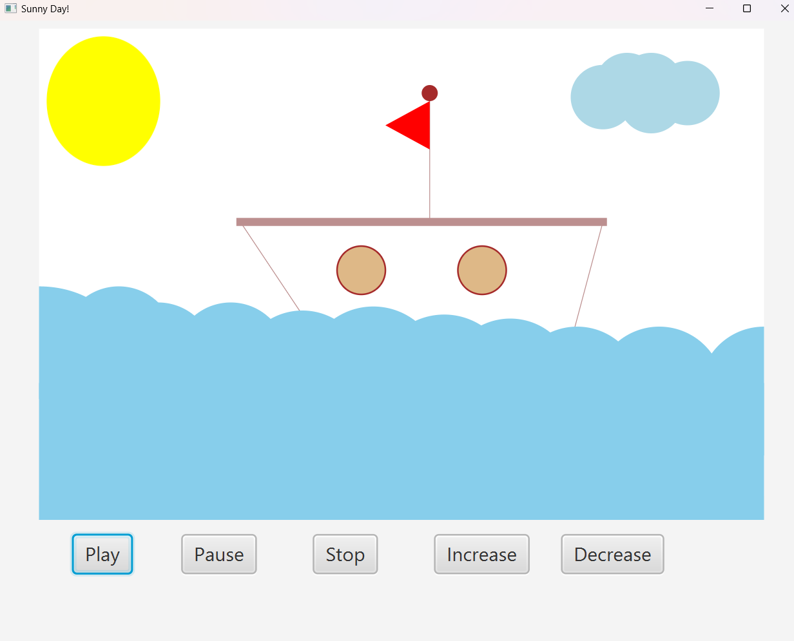
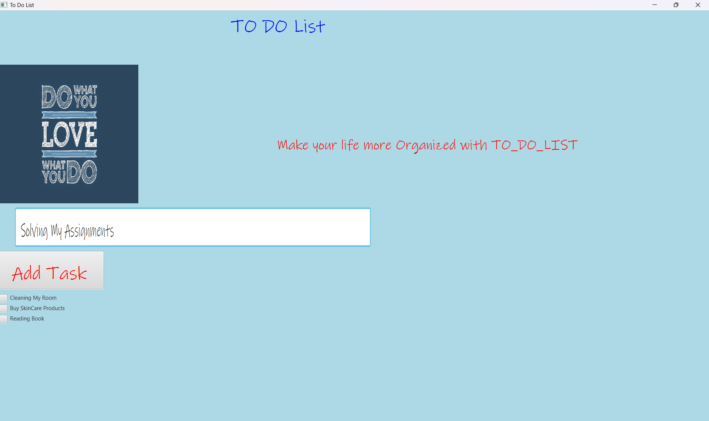
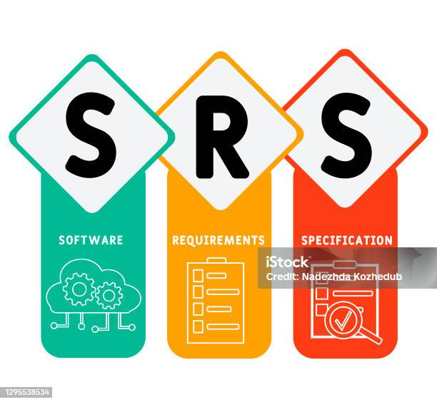
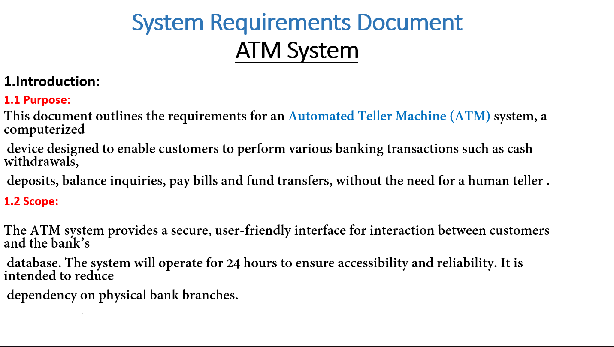
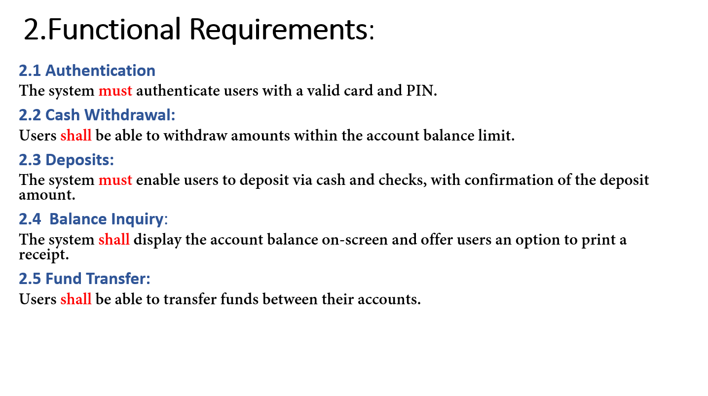
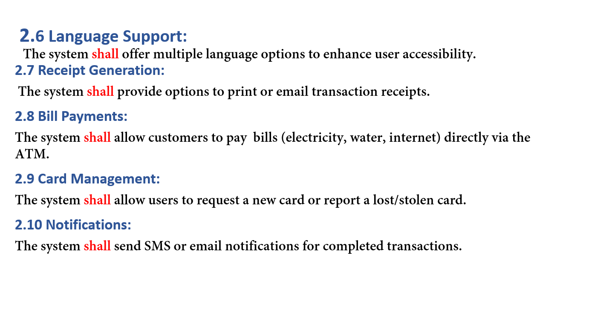
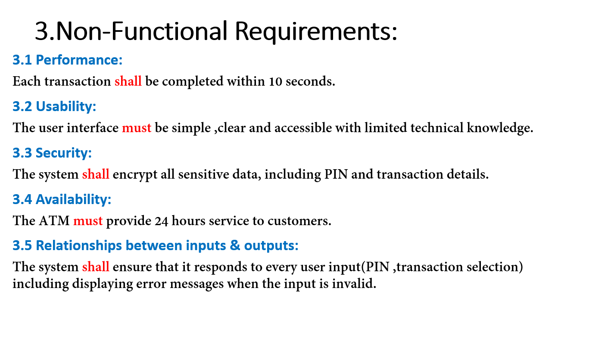

First Project
The aim of this project is to design and animate a boat sailing on the sea usin JavaFX .
The animation will show a smooth boat movement over the sea and interactive weather changes.
The project is served using animation capabilities Timeline , transitions and event-handling
,in order to immerse on designing an interactive GUI using JavaFX.
In this Project,we designed a small artwork of a ship in the middle of the sea.
We animated it using Method and added some effects
that make the artwork more relevant to our Lives.
Second Project
This Is a simple GUI about To Do List
I made this To do list to organize my tasks , I use my experience on javafx to create something help me on my life.
Here I Write All My Tasks and I put a check mark next to every task I finish
Third Project
    The document is a System Requirements Specification SRS for an Automated Teller MachineATM system.
It details both functional and non-functional requirements for a secure and user-friendly ATM.